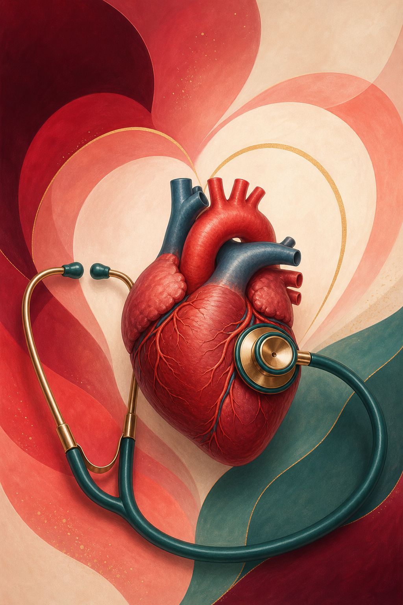
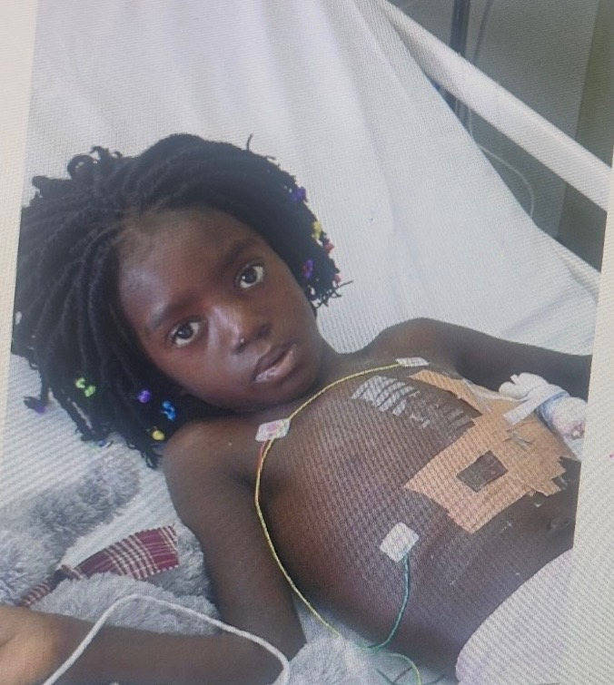
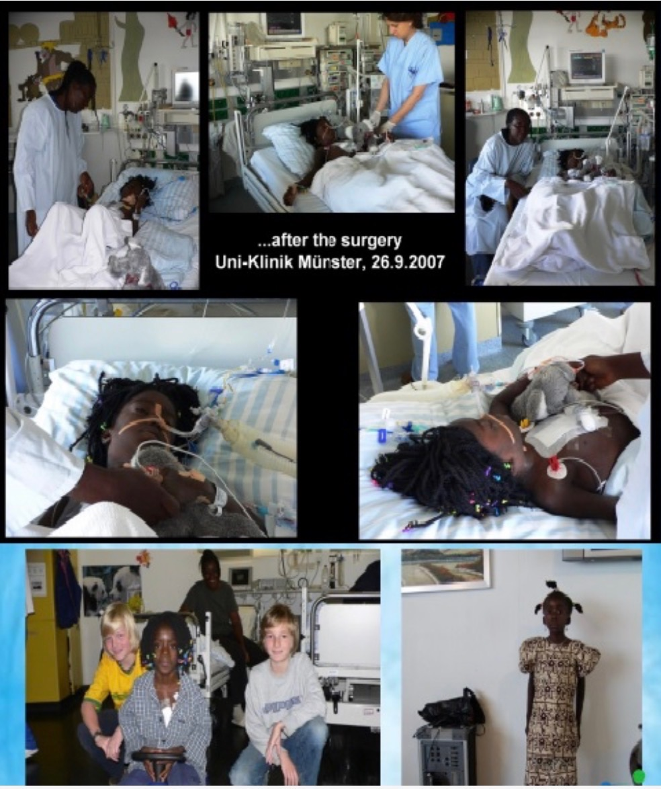

A carefree camp experience
Provide a joyful, confidence-building camp experience for children living with heart conditions.
We empower heart families throughout Sierra Leone and West Africa with emotional, educational, and financial support—helping children receive care before preventable health deterioration.

Annette’s Heart Foundation for Children is a non-profit organization committed to making a positive difference in the lives of children with heart conditions throughout Sierra Leone and West Africa. We empower heart families through emotional, educational, and financial support to improve the quality of life for children. We actively reach those with limited access to care with open hearts to change their circumstances for the better. Our aim is to focus on underprivileged areas of West Africa to diagnose and treat children with cardiovascular problems early to avoid preventable health deterioration. We challenge you to be the difference the world needs and join our initiative to make a lasting imprint in the lives of others.
From joyful childhood experiences to regional medical infrastructure, our goals support the whole child and family.
Provide a joyful, confidence-building camp experience for children living with heart conditions.
Educate healthcare professionals and the general public on pediatric cardiology issues.
Lend support as families navigate the emotional and financial toll exacted by a child’s heart problem.
Build a heart hospital and provide the equipment needed to diagnose heart problems in Sierra Leone and West Africa.
Annette’s journey shows what determined advocacy, generous support, and timely treatment can make possible—and why no child should have to wait for life-saving care.

Annette Sam was born in Sierra Leone with a congenital heart disease that was not diagnosed until she was 8 years old. She urgently needed heart surgery, but Sierra Leone did not have the facilities or medical technology to provide this level of operation. The surgery needed to be done overseas, but her family did not have the resources to pursue that treatment.
Her parents, desperately seeking help and guidance to save their daughter's life, reached out to PIKIN BIZNESS, a charity organization that assisted families with such problems. Due to the high volume of children with similar burdens, Annette was 150th on the waiting list for sponsorship. For Annette, waiting wasn’t an option—the surgery needed to be done immediately.
Annette’s father, Rev. Brickson Sam, a Baptist minister, had connections in Europe and the United States through his working relationship with the Baptist World Alliance. He contacted his networks and secured the funds needed for Annette’s heart surgery, including travel costs for Annette and her mother.
On September 9, 2007, they flew to Frankfurt, Germany—the first case to be referred to Germany. Hosted by a member of a local Baptist church, Annette underwent surgery, which was a complete success. She recovered physically from the heart disease and the surgery itself.
Unfortunately, Annette has significant intellectual impairment, most likely a side effect of a long-term, undiagnosed and untreated heart condition during pivotal developmental years.

Annette and her family immigrated to the United States and settled in Charlotte, North Carolina. She attended public school and continuously struggled with learning difficulties.
At age 12, Annette was still in fourth grade. Her school developed an individualized curriculum based on her abilities, talents, and skills.
Annette graduated from high school at age 20 and attended cosmetology school. Generous support helped turn her life around, and she is thriving in Charlotte today.
Every donation is truly valuable, and we understand that our donors are contributing hard-earned money to a great cause. Upon receiving a donation, we reach out to provide information on what your gift will be used for. We want you to know how your generosity has impacted the lives of many. We urge you to donate what you can. Any amount is appreciated and makes a significant difference.